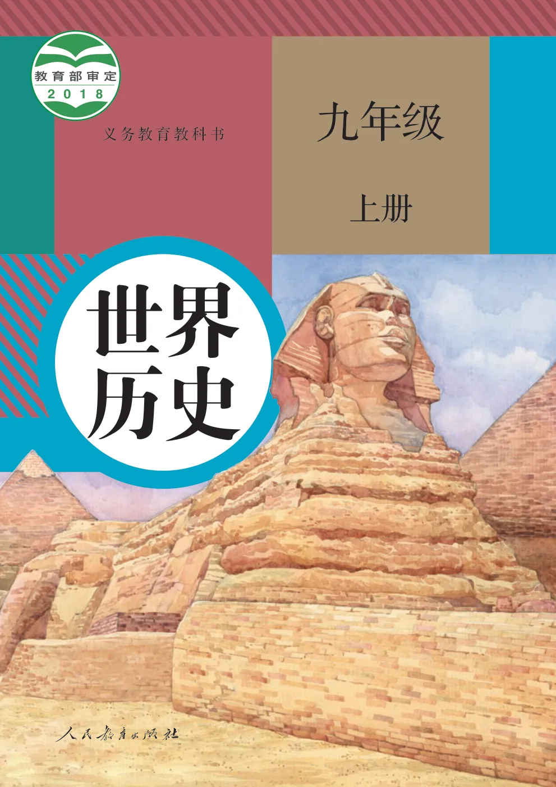
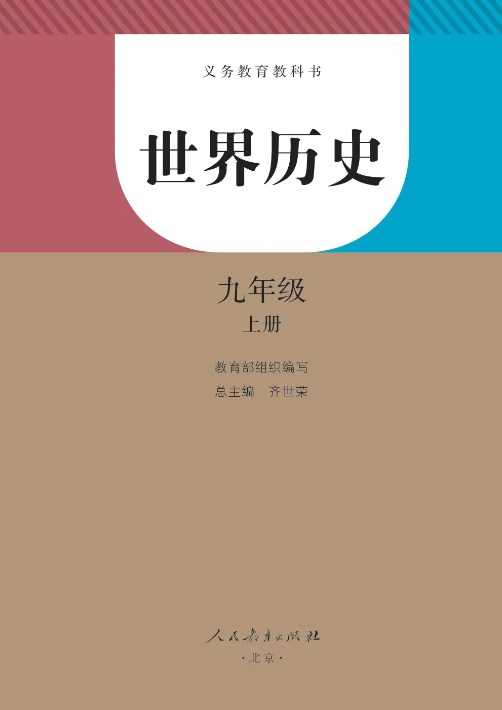
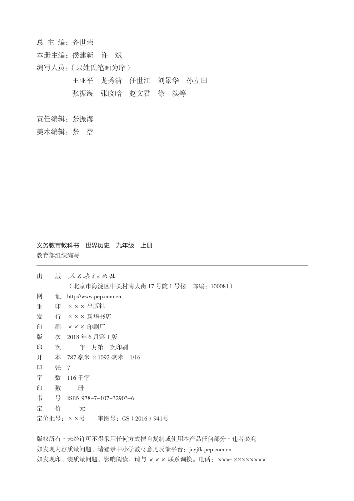
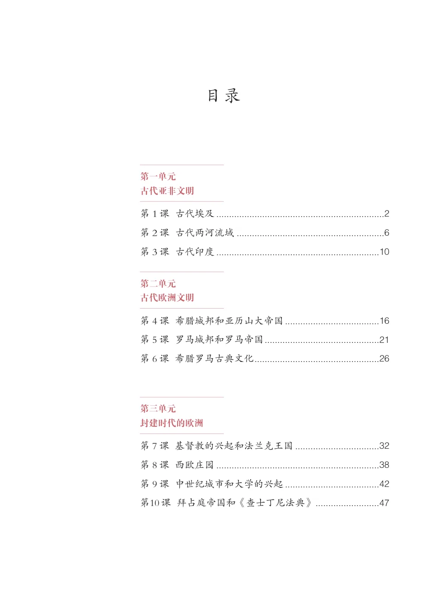
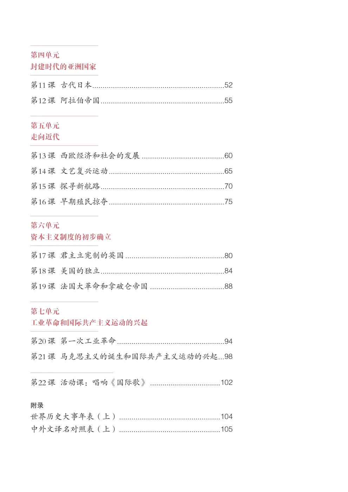

UNIT 01
第一单元
古代亚非文明

CONTENTS
点击单元进入完整单元页；点击课名直接跳到该单元页内对应锚点。
APPENDIX
世界历史大事年表（上）、中外文译名对照表（上）、后记及封底页面。
FRONT MATTER
前置页面的可复制文字与完整原书页面。
·北京·
总主编：齐世荣本册主编：侯建新许斌编写人员：（以姓氏笔画为序）王亚平龙秀清任世江刘景华孙立田张振海张晓晗赵文君徐滨等
责任编辑：张振海美术编辑：张蓓
义务教育教科书世界历史九年级上册
教育部组织编写
出版
（北京市海淀区中关村南大街17号院1号楼邮编：100081）
网址 http://www.pep.com.cn
重印 ××× 出版社
发行 ××× 新华书店
印刷 ××× 印刷厂
版次2018年6月第1版
印次年月第次印刷
开本787毫米×1092毫米1/16
印张7
字数116千字
印数册
书号 ISBN 978-7-107-32903-6
定价元
定价批号：××号审图号：GS（2016）941号
版权所有·未经许可不得采用任何方式擅自复制或使用本产品任何部分·违者必究
如发现内容质量问题，请登录中小学教材意见反馈平台：jcyjfk.pep.com.cn
如发现印、装质量问题，影响阅读，请与××× 联系调换。电话：×××-××××××××
古代亚非文明
第１课古代埃及...................................................................2第２课古代两河流域...........................................................6第３课古代印度.................................................................10
第二单元古代欧洲文明
第４课希腊城邦和亚历山大帝国......................................16第5课罗马城邦和罗马帝国.............................................21第6课希腊罗马古典文化.................................................26
第三单元封建时代的欧洲
第7课基督教的兴起和法兰克王国..................................32第8课西欧庄园.................................................................38第9课中世纪城市和大学的兴起......................................42第10课拜占庭帝国和《查士丁尼法典》.........................47
封建时代的亚洲国家
走向近代
第13课西欧经济和社会的发展.........................................60第14课文艺复兴运动........................................................65第15课探寻新航路............................................................70第16课早期殖民掠夺........................................................75
第六单元资本主义制度的初步确立
第17课君主立宪制的英国.................................................80第18课美国的独立............................................................84第19课法国大革命和拿破仑帝国.....................................88
第七单元工业革命和国际共产主义运动的兴起
第20课第一次工业革命....................................................94第21课马克思主义的诞生和国际共产主义运动的兴起...98
第22课活动课：唱响《国际歌》...................................102
附录世界历史大事年表（上）.................................................104中外文译名对照表（上）.................................................105



